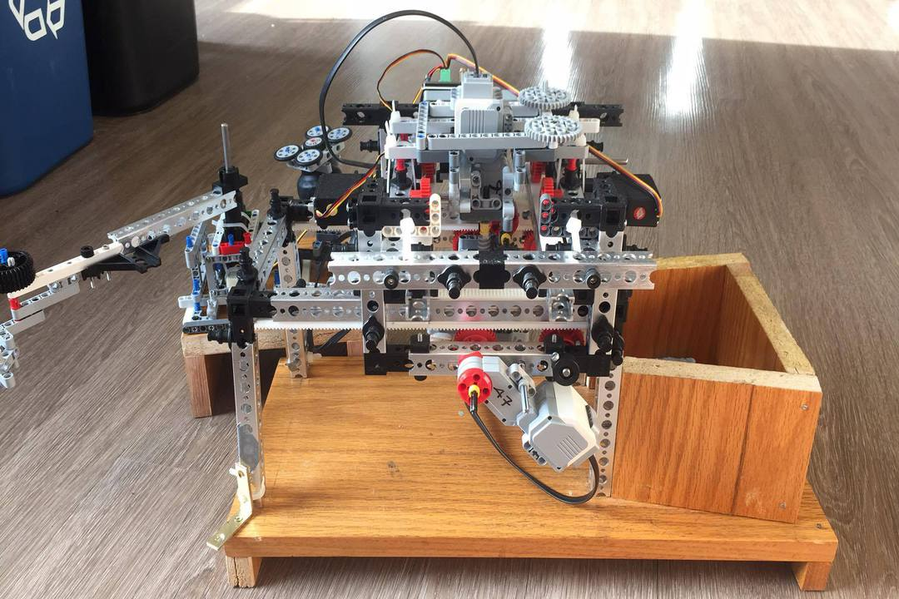
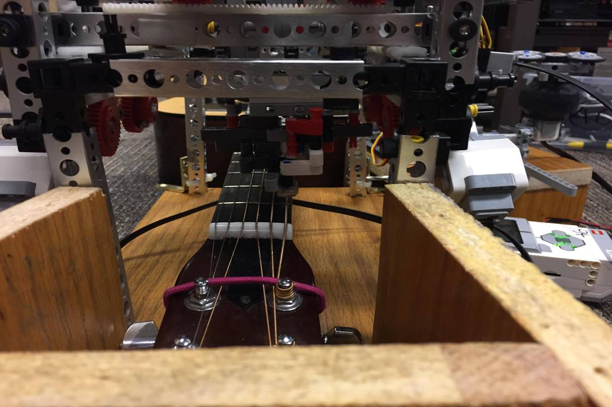
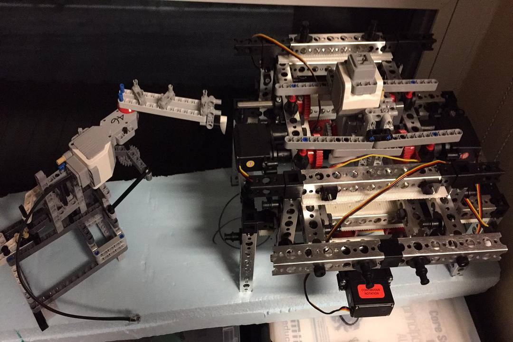
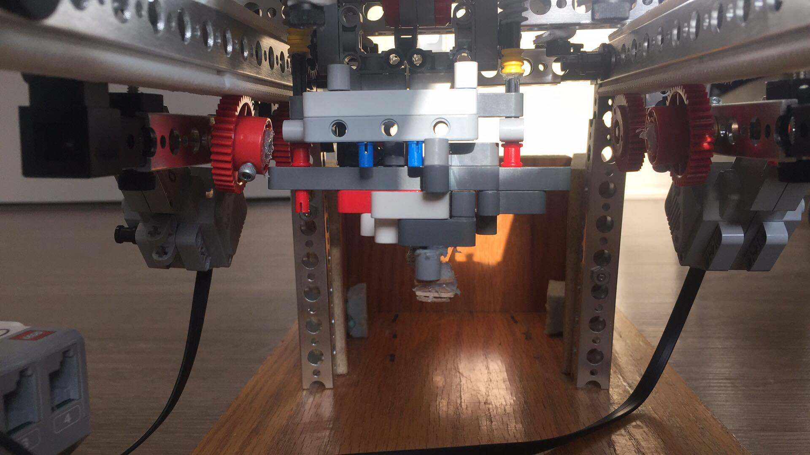

Selectively chooses chords based on song file input and holds down power chords accordingly

Chording Mechanism View 2

Chord Committing Design
Commits or releases with parallel timing to the strumming mechanism

Strumming Mechanism
Strums based on predeterimined song tempo
The strumming and chording mechanisms in action, as well as the UI
with song and user hint display for pause and termination features.
The chording mechanism developed to press chords down in
parallel time to each strum. Commit or release action created through a
worm drive controlled by a singular motor. Uses encoder values to press
down at the required pressure and release to a distance that allows it to be
recommitted with little delay.

Termination button (right) and strumming mechanism (bottom). The termination button
is used to exit a song at any given time and recalibrate the robot to starting position
using inital encoder positioning. Strummer uses two plastic guitar picks angled at 45%
and a metal weight in order to strum with enough strength to produce sound.